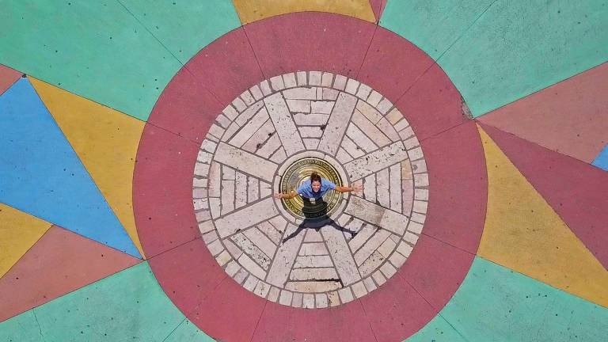

Marco Zero - Praça de Recife
O Marco Zero em Recife é mais que um ponto geográfico, é o coração pulsante da cidade. Marcando o início da contagem das distâncias rodoviárias do Brasil, esse local histórico é um símbolo da rica cultura e da conexão com o passado e o futuro da região.
Foto do Marco Zero
A fotografia deste belo ponto turístico foi tirada por: Whinderson Durval.

O símbolo do Marco Zero consiste em uma grande bússola de bronze no chão, que representa a divisão entre o centro histórico e o moderno. Ele foi instalado na década de 90 durante a revitalização do bairro.
